Unit 5 · Session 2 · Thu, Nov 19, 2026
4 parts · every fact cited to its slide or textbook page. About 130 minutes of focused study.
IO = syllabus unit objective · SO = this session's objectives slide.
| ID | Objective | Covered in |
|---|---|---|
| IO5.1 | Identify major pharmacologic classes used in the management of renal conditions and describe their mechanisms of action. | Part 1 · RAAS Blockers Part 2 · Other Antihypertensives & Resistant Hypertension Part 3 · Nitrates, Angina & the Triple Whammy |
| IO5.2 | Describe the indications, contraindications, adverse effects, and clinically significant interactions associated with medications used to treat renal conditions. | Part 1 · RAAS Blockers Part 2 · Other Antihypertensives & Resistant Hypertension Part 3 · Nitrates, Angina & the Triple Whammy |
| IO5.3 | Compare pharmacologic agents within and across therapeutic classes to distinguish clinically relevant differences in efficacy, safety, and use. | Part 2 · Other Antihypertensives & Resistant Hypertension Part 3 · Nitrates, Angina & the Triple Whammy Part 4 · Putting It All Together: Renal Toolkit |
| IO5.4 | Select appropriate pharmacologic therapy for common renal conditions based on clinical presentation and patient-specific factors. | Part 1 · RAAS Blockers Part 2 · Other Antihypertensives & Resistant Hypertension Part 4 · Putting It All Together: Renal Toolkit |
| IO5.5 | Identify appropriate dosing, administration, and monitoring considerations for medications used in renal conditions. | Part 1 · RAAS Blockers |
| IO5.6 | Explain important medication-use and safety information to patients receiving pharmacotherapy for renal. | Part 3 · Nitrates, Angina & the Triple Whammy Part 4 · Putting It All Together: Renal Toolkit |
| SO1 | Describe the renin-angiotensin-aldosterone system (RAAS) and identify where each antihypertensive drug class acts. | Part 1 · RAAS Blockers |
| SO2 | Explain why ACE inhibitors and ARBs are preferred first-line therapy for hypertension in chronic kidney disease, including their renoprotective mechanism. | Part 1 · RAAS Blockers |
| SO3 | Identify major antihypertensive drug classes beyond RAAS blockers, their mechanisms, and their role in CKD-specific management. | Part 2 · Other Antihypertensives & Resistant Hypertension |
| SO4 | Describe vasodilator pharmacology (nitrates, calcium channel blockers) in angina pectoris and its mechanistic overlap with cardiovascular-renal disease management. | Part 3 · Nitrates, Angina & the Triple Whammy |
| SO5 | Identify high-risk drug combinations and monitoring needs at the cardiorenal interface, including the "triple whammy," and apply the full renal/cardiorenal toolkit to integrated clinical scenarios with a cumulative recall quiz. | Part 3 · Nitrates, Angina & the Triple Whammy Part 4 · Putting It All Together: Renal Toolkit |
Slide discrepancies: none found (slides, speaker notes, and study guide agree).
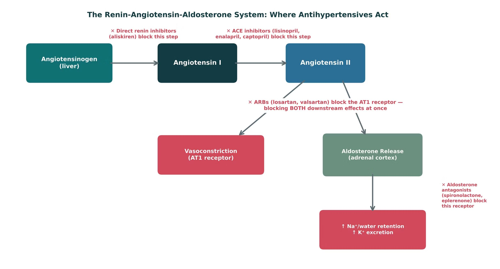
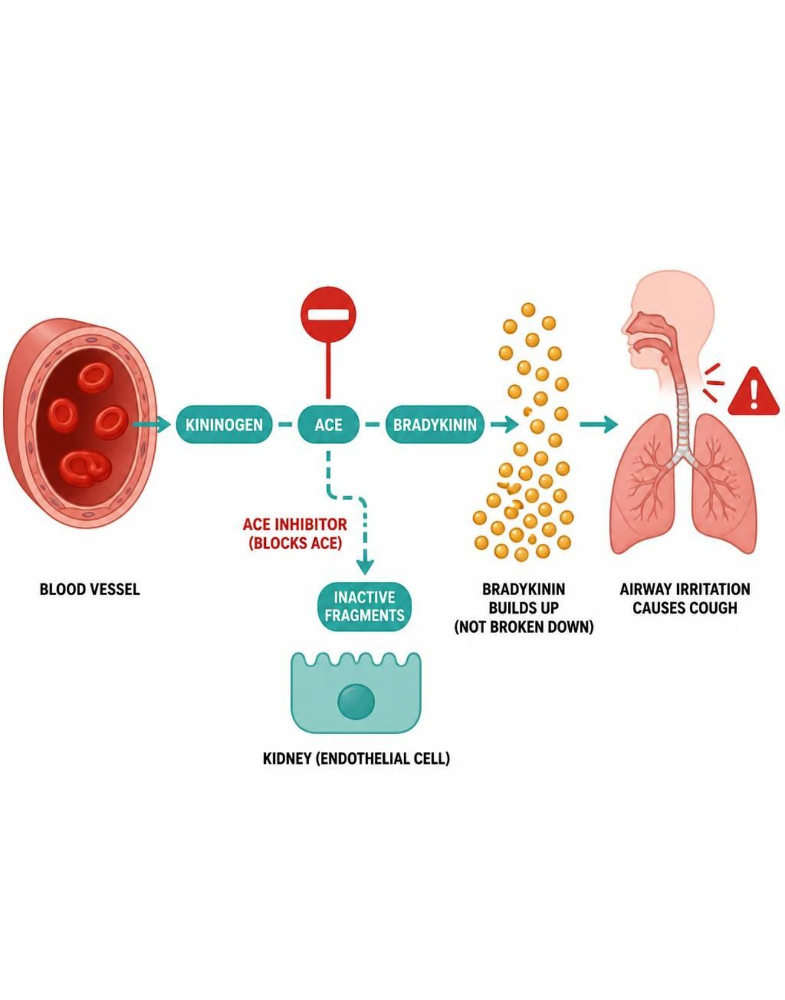
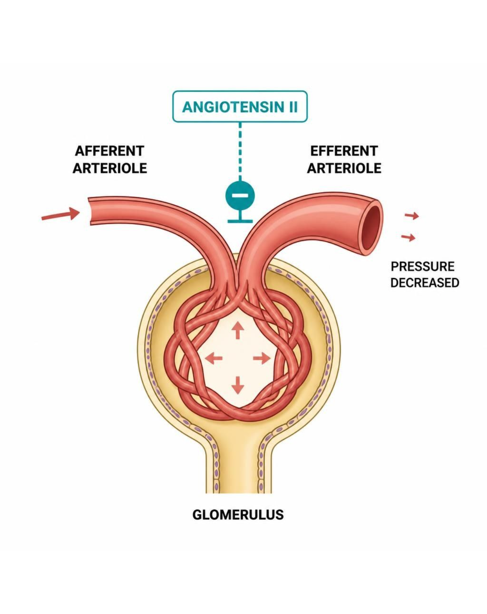
| ACE inhibitors (-pril) | ARBs (-sartan) | Aliskiren (-kiren) | |
|---|---|---|---|
| Block | Angiotensin I → II conversion | AT1 receptor | Renin (first step) |
| Cough / bradykinin | Yes — most common reason to switch | No | Cough listed on profile |
| Pregnancy | Contraindicated | Contraindicated | Contraindicated |
| Use | First-line HTN in proteinuric CKD | First-line; ACEi cough alternative | Limited; never with ACEi/ARB in diabetes |
How to tell them apart. Sources: S5; S7; S37-42
| Drug | Class | Formulation | Adult dose | Indications |
|---|---|---|---|---|
| Captopril (Capoten) | ACE inhibitor | Tablets 12.5/25/50/100 mg | Hypertension: 12.5-25 mg PO BID-TID (maximum 450 mg/day); heart failure: 6.25-12.5 mg TID | Hypertension, heart failure, post-MI, diabetic nephropathy |
| Lisinopril (Zestril, Prinivil) | ACE inhibitor | Tablets 2.5/5/10/20/30/40 mg | Hypertension: 10 mg PO daily, titrate to 40 mg (maximum 80 mg); heart failure: start 2.5-5 mg daily | Hypertension, heart failure, post-MI, diabetic nephropathy |
| Enalapril (Vasotec) | ACE inhibitor (prodrug) | Tablets 2.5/5/10/20 mg; IV enalaprilat | Hypertension: 5 mg PO daily, titrate to 40 mg daily or divided; heart failure: 2.5 mg BID | Hypertension, heart failure, asymptomatic LV dysfunction |
How to tell them apart. Sources: S37; S38; S39
| Drug | Adverse effects | Contraindications | Toxicity / overdose |
|---|---|---|---|
| Captopril (Capoten) | Cough, hyperkalemia, hypotension, taste change, rash, angioedema | Pregnancy, history of angioedema with ACE inhibitors, bilateral renal artery stenosis, concomitant aliskiren in diabetes | Angioedema, hyperkalemia, hypotension, AKI; take 1 hour before meals; monitor potassium and creatinine |
| Lisinopril (Zestril, Prinivil) | Dry cough, dizziness, hyperkalemia, creatinine rise up to 30%, angioedema | Pregnancy, angioedema history, bilateral renal artery stenosis, concomitant aliskiren in diabetes | Angioedema, hyperkalemia, symptomatic hypotension, AKI during volume depletion |
| Enalapril (Vasotec) | Cough, hyperkalemia, dizziness, hypotension, angioedema | Pregnancy, angioedema history, bilateral renal artery stenosis | Hypotension, hyperkalemia, angioedema, AKI; reduce dose when CrCl is below 30 mL/min |
How to tell them apart. Sources: S37; S38; S39
| Drug | Class | Formulation | Adult dose | Indications |
|---|---|---|---|---|
| Losartan (Cozaar) | Angiotensin receptor blocker (ARB) | Tablets 25/50/100 mg | Hypertension: 50 mg PO daily, up to 100 mg; diabetic nephropathy: 50 mg daily, increase to 100 mg | Hypertension, diabetic nephropathy, stroke risk reduction with LV hypertrophy, heart failure alternative |
| Valsartan (Diovan) | Angiotensin receptor blocker (ARB) | Tablets 40/80/160/320 mg | Hypertension: 80-160 mg PO daily (maximum 320 mg); heart failure: 40 mg BID, titrate to 160 mg BID | Hypertension, heart failure, post-MI |
| Aliskiren (Tekturna) | Direct renin inhibitor | Tablets 150/300 mg | 150 mg PO daily, may increase to 300 mg daily; take consistently with respect to meals | Hypertension (rarely first-line) |
How to tell them apart. Sources: S40; S41; S42
| Drug | Adverse effects | Contraindications | Toxicity / overdose |
|---|---|---|---|
| Losartan (Cozaar) | Dizziness, hyperkalemia, creatinine rise, rare angioedema | Pregnancy, concomitant aliskiren in diabetes, bilateral renal artery stenosis | Hypotension, hyperkalemia, fetal toxicity; no bradykinin cough |
| Valsartan (Diovan) | Dizziness, hyperkalemia, fatigue, creatinine rise | Pregnancy, concomitant aliskiren in diabetes, bilateral renal artery stenosis | Hypotension, hyperkalemia, fetal toxicity |
| Aliskiren (Tekturna) | Diarrhea, cough, hyperkalemia, angioedema, hypotension | Pregnancy; do not combine with ACE inhibitors or ARBs in diabetes or with eGFR below 60 mL/min | Hypotension, hyperkalemia, AKI when combined with ACE inhibitors or ARBs |
How to tell them apart. Sources: S40; S41; S42
Not covered in materials
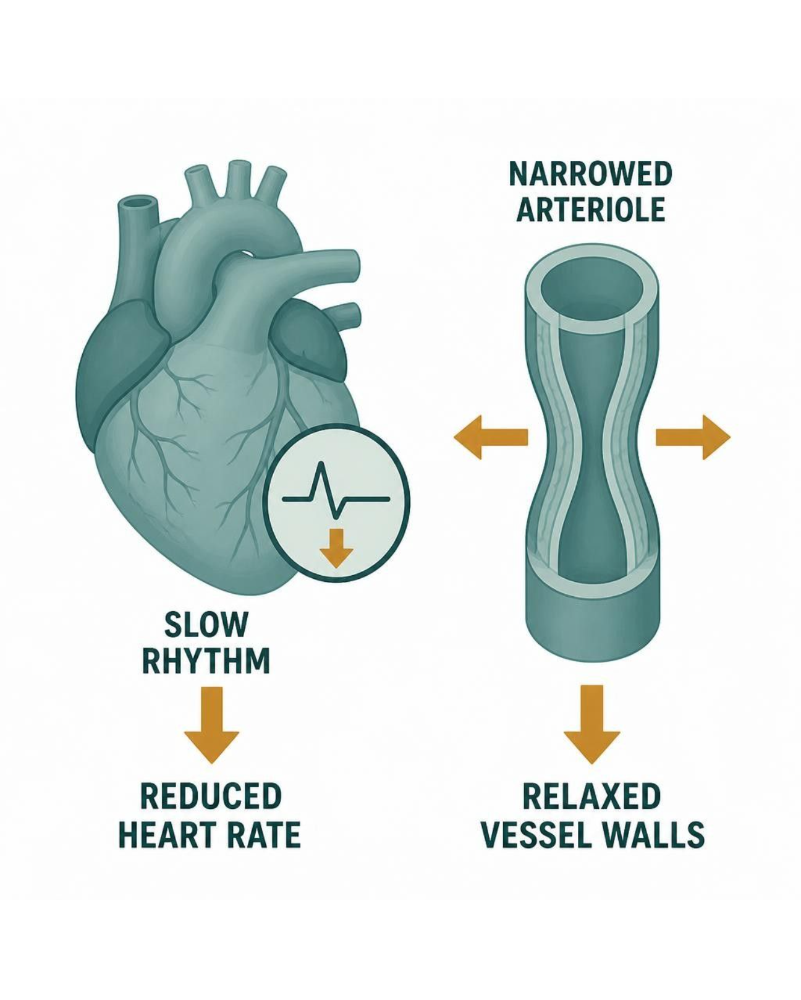
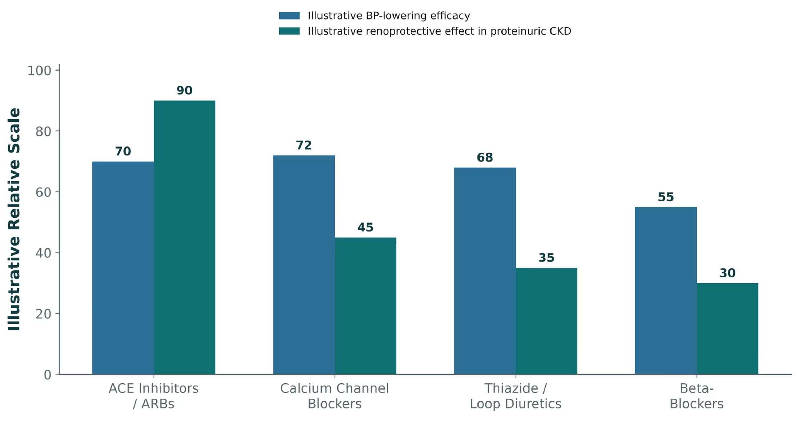
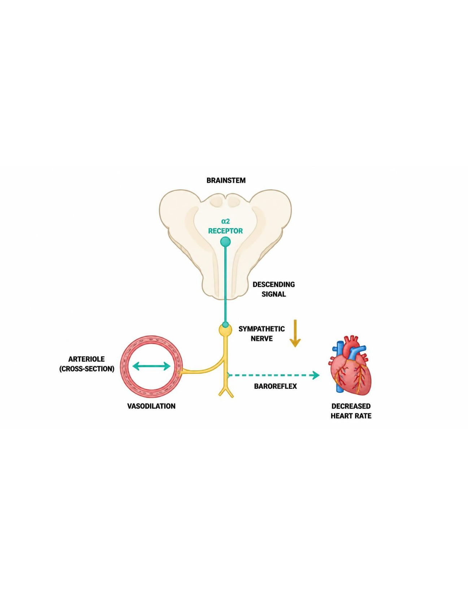
| Class | Examples | Mechanism | Key point |
|---|---|---|---|
| Calcium channel blockers | Amlodipine; diltiazem, verapamil | Arteriolar dilation; non-DHP also ↓ HR/contractility | Peripheral edema |
| Beta-blockers | Metoprolol, atenolol | ↓ HR, contractility, renin | Compelling: CAD, HF, arrhythmia |
| Thiazide / loop diuretics | HCTZ; furosemide | Session 1 | Loops as GFR falls |
| Central agents & direct vasodilators | Clonidine, methyldopa; hydralazine | Central α2; direct arteriolar | Resistant HTN; methyldopa in pregnancy |
How to tell them apart. Sources: S12
| Drug | Class | Formulation | Adult dose | Indications |
|---|---|---|---|---|
| Amlodipine (Norvasc) | Dihydropyridine calcium channel blocker | Tablets 2.5/5/10 mg; oral suspension | Hypertension or angina: 5 mg PO daily, up to 10 mg daily; start 2.5 mg in older or frail patients | Hypertension, chronic stable angina, vasospastic angina |
| Nifedipine ER (Procardia XL, Adalat CC) | Dihydropyridine calcium channel blocker | Extended-release tablets 30/60/90 mg | 30-60 mg PO daily, titrate to 90-120 mg daily; avoid immediate-release capsules for hypertension | Hypertension, chronic stable angina, vasospastic angina |
| Diltiazem (Cardizem) | Non-dihydropyridine calcium channel blocker | Tablets 30/60/90/120 mg; ER capsules 120-420 mg; IV injection | Hypertension: ER 120-240 mg PO daily up to 360 mg; angina: 30 mg QID (immediate-release) or ER daily | Hypertension, angina, atrial fibrillation rate control |
| Verapamil (Calan, Isoptin) | Non-dihydropyridine calcium channel blocker | Tablets 40/80/120 mg; ER tablets 120/180/240 mg; IV injection | Hypertension: SR 180-240 mg PO daily up to 480 mg; angina: 80-120 mg TID | Hypertension, angina, atrial fibrillation and SVT rate control |
How to tell them apart. Sources: S43; S44; S45; S46
| Drug | Adverse effects | Contraindications | Toxicity / overdose |
|---|---|---|---|
| Amlodipine (Norvasc) | Peripheral edema, flushing, headache, dizziness, gingival hyperplasia | Hypersensitivity, severe aortic stenosis (caution), cardiogenic shock | Profound hypotension with reflex tachycardia, prolonged vasodilation; slow onset and long half-life |
| Nifedipine ER (Procardia XL, Adalat CC) | Peripheral edema, headache, flushing, reflex tachycardia, constipation | Cardiogenic shock, hypersensitivity; avoid immediate-release forms in acute coronary syndrome | Severe hypotension, reflex tachycardia, edema; swallow ER tablet whole |
| Diltiazem (Cardizem) | Bradycardia, AV block, edema, constipation, dizziness, CYP3A4 interactions | Sick sinus syndrome, second- or third-degree AV block, severe hypotension, acute MI with pulmonary congestion, reduced EF | Bradycardia, AV block, heart failure exacerbation; strongly interacts with beta-blockers |
| Verapamil (Calan, Isoptin) | Constipation, bradycardia, AV block, edema, dizziness, gingival hyperplasia | Sick sinus syndrome, AV block, severe LV dysfunction, WPW with atrial fibrillation, cardiogenic shock | Severe bradycardia, AV block, heart failure; avoid with beta-blockers; raises digoxin levels |
How to tell them apart. Sources: S43; S44; S45; S46
| Drug | Class | Formulation | Adult dose | Indications |
|---|---|---|---|---|
| Metoprolol (Lopressor, Toprol-XL) | Beta-1 selective beta-blocker | Tartrate tablets 25/50/100 mg; succinate ER tablets 25-200 mg; IV injection | Hypertension: tartrate 50 mg PO BID or succinate 50-100 mg daily (maximum 400 mg/day); heart failure: succinate 12.5-25 mg daily, titrate | Hypertension with CAD or HF, angina, post-MI, atrial fibrillation |
| Atenolol (Tenormin) | Beta-1 selective beta-blocker | Tablets 25/50/100 mg | Hypertension: 25-50 mg PO daily (maximum 100 mg); reduce dose when CrCl is below 35 mL/min | Hypertension, angina, post-MI |
How to tell them apart. Sources: S47; S48
| Drug | Adverse effects | Contraindications | Toxicity / overdose |
|---|---|---|---|
| Metoprolol (Lopressor, Toprol-XL) | Fatigue, bradycardia, dizziness, cold extremities, sexual dysfunction, bronchospasm at high dose | Severe bradycardia, high-grade AV block, decompensated HF, cardiogenic shock; do not stop abruptly | Bradycardia, hypotension, heart block, bronchospasm; rebound tachycardia with abrupt withdrawal |
| Atenolol (Tenormin) | Fatigue, bradycardia, cold extremities, depression, erectile dysfunction | Severe bradycardia, high-grade AV block, decompensated HF; do not stop abruptly | Accumulates in renal impairment, causing bradycardia and hypotension; rebound after abrupt withdrawal |
How to tell them apart. Sources: S47; S48
| Drug | Class | Formulation | Adult dose | Indications |
|---|---|---|---|---|
| Clonidine (Catapres) | Central alpha-2 agonist | Tablets 0.1/0.2/0.3 mg; transdermal patch 0.1-0.3 mg/day weekly | Hypertension: 0.1 mg PO BID, titrate (usual maximum 2.4 mg/day); patch 0.1 mg/day weekly | Resistant hypertension, hypertensive urgency adjunct, opioid withdrawal adjunct |
| Methyldopa (Aldomet) | Central alpha-2 agonist | Tablets 250/500 mg | 250 mg PO BID-TID, titrate (maximum 3 g/day); preferred oral option for hypertension in pregnancy | Hypertension in pregnancy, resistant hypertension |
| Hydralazine (Apresoline) | Direct arteriolar vasodilator | Tablets 10/25/50/100 mg; IV injection | Hypertension: 10 mg PO QID, titrate to 25-50 mg QID (maximum 300 mg/day); heart failure with isosorbide dinitrate: 25-75 mg TID | Resistant hypertension, hypertensive emergency in pregnancy, heart failure (with nitrate) |
How to tell them apart. Sources: S49; S50; S51
| Drug | Adverse effects | Contraindications | Toxicity / overdose |
|---|---|---|---|
| Clonidine (Catapres) | Sedation, dry mouth, bradycardia, constipation, rebound hypertension | Hypersensitivity; use caution in bradycardia and AV block | Rebound hypertension with abrupt withdrawal; overdose causes bradycardia, hypotension, coma and miosis |
| Methyldopa (Aldomet) | Sedation, depression, dry mouth, positive Coombs test, hepatotoxicity | Active liver disease, concomitant MAO inhibitors, history of methyldopa hepatitis | Hemolytic anemia, hepatitis, drug fever; monitor liver tests and CBC |
| Hydralazine (Apresoline) | Headache, reflex tachycardia, fluid retention, flushing, drug-induced lupus | Coronary artery disease without beta-blocker, mitral valve rheumatic disease, hypersensitivity | Reflex tachycardia, angina, lupus-like syndrome with high dose or slow acetylators; pair with beta-blocker and diuretic |
How to tell them apart. Sources: S49; S50; S51
Not covered in materials
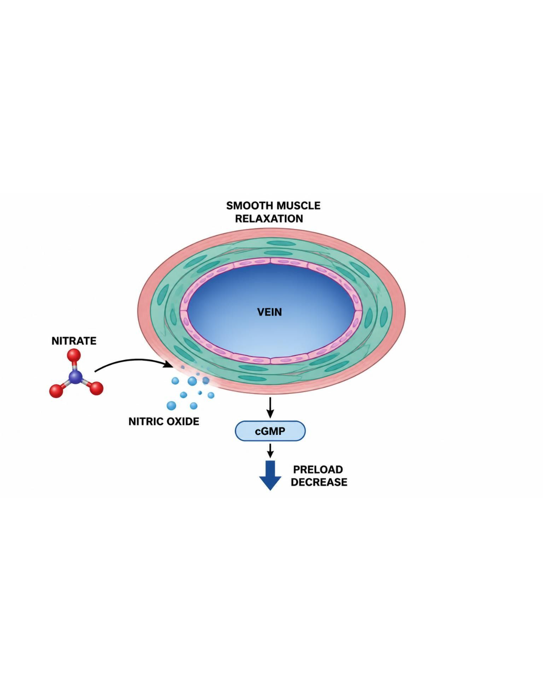
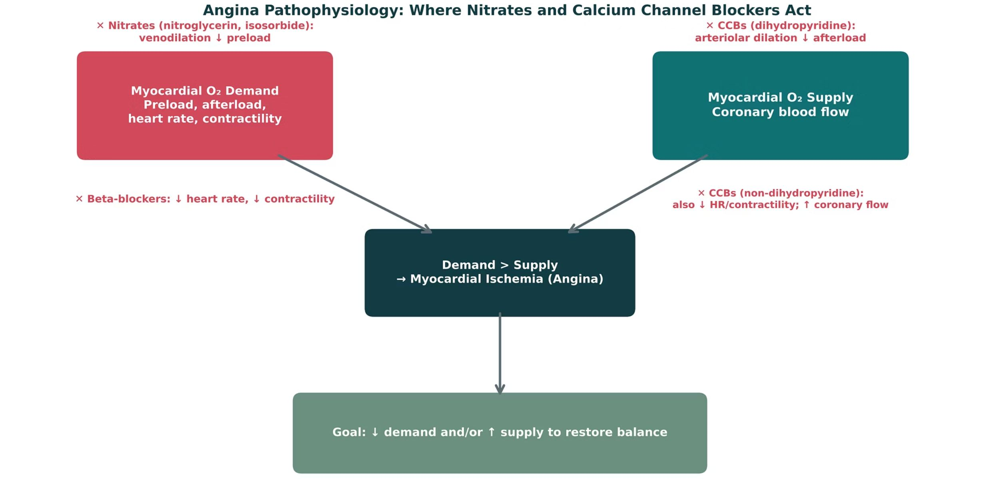
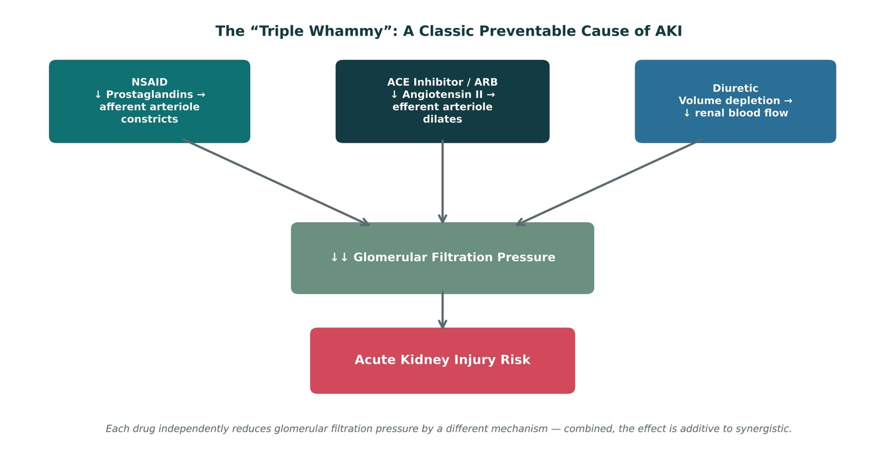
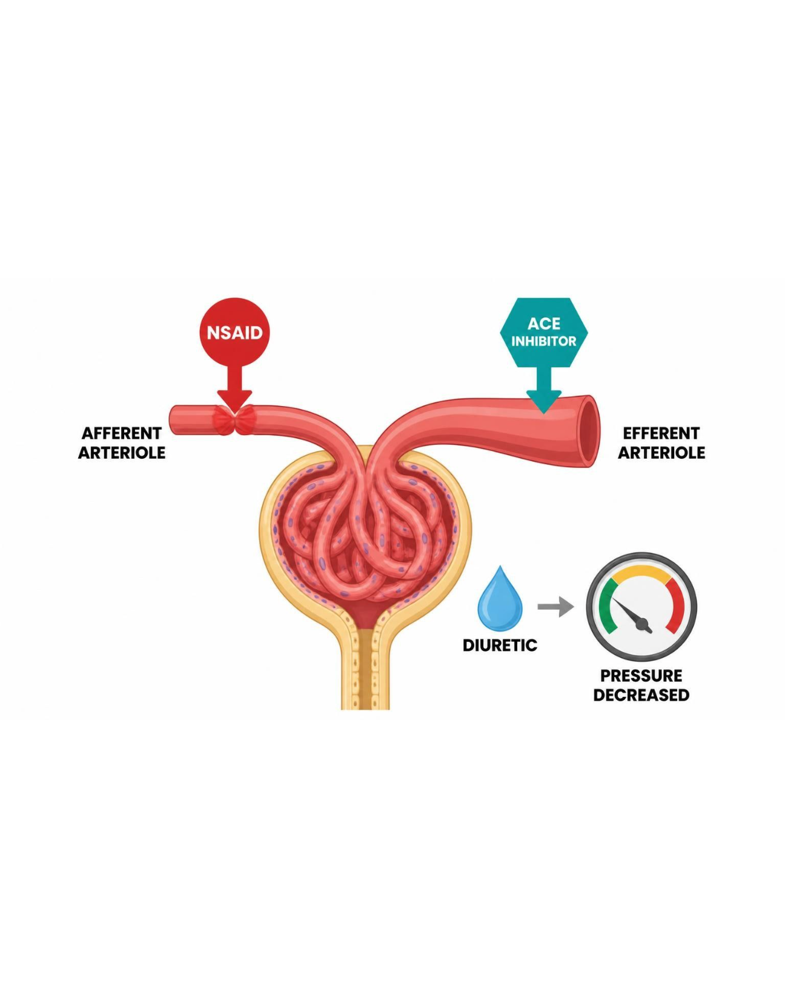
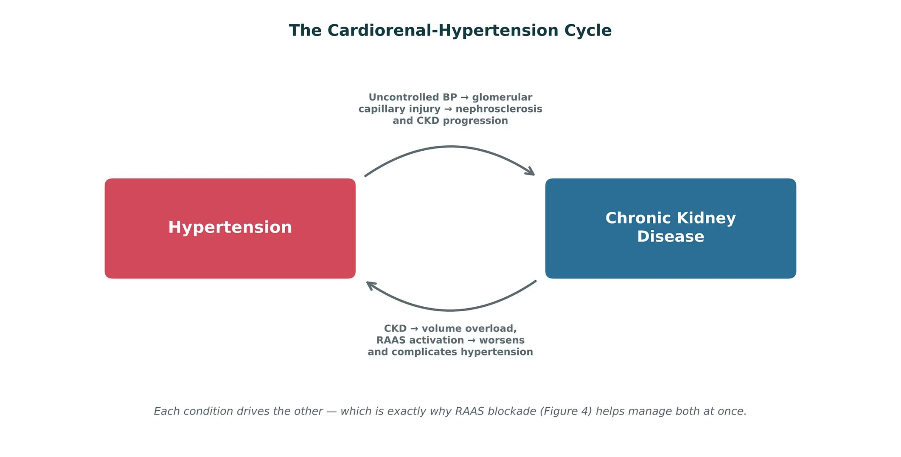
| Dihydropyridines | Non-dihydropyridines | |
|---|---|---|
| Examples | Amlodipine, nifedipine | Diltiazem, verapamil |
| Main action | Arteriolar dilation → ↓ afterload | ↓ HR, contractility; ↑ coronary flow |
| Adverse effects | Peripheral edema, reflex tachycardia | Bradycardia, AV block, constipation (verapamil) |
| With a beta-blocker | Safe pairing | Avoid — bradycardia/AV block |
How to tell them apart. Sources: S13; S22
| Stem | Class | Examples | Memory aid |
|---|---|---|---|
| -pril | ACE inhibitor | Lisinopril, enalapril, captopril | Angiotensin-converting enzyme |
| -sartan | ARB | Losartan, valsartan | Angiotensin receptor blocker |
| -kiren | Direct renin inhibitor | Aliskiren | Renin is the top of the cascade |
| -dipine | Dihydropyridine CCB | Amlodipine, nifedipine | Arteriolar dilation |
| -olol | Beta-blocker | Metoprolol, atenolol | Heart rate and renin down |
| -azine / -alazine | Hydralazine vasodilator | Hydralazine | Pair with beta-blocker and diuretic |
| -onidine | Central alpha-2 agonist | Clonidine | Central, so sympathetic outflow falls |
| -nitrate / nitro- | Nitrates | Isosorbide, nitroglycerin | Venodilation, preload down |
| -afil | PDE5 inhibitor | Sildenafil | Never combine with nitrates |
| -semide | Loop diuretic | Furosemide | Loop of Henle |
How to tell them apart. Sources: S28; S28 (notes)
| Drug(s) | Why it matters here |
|---|---|
| NSAIDs | Blunt antihypertensives; raise AKI risk with ACE inhibitor or ARB plus diuretic |
| PDE5 inhibitors (such as sildenafil) | Never combine with nitrates |
| Potassium supplements and potassium-sparing diuretics | Hyperkalemia with ACE inhibitors and ARBs |
| Trimethoprim | Hyperkalemia |
| Loop and thiazide diuretics | Covered in Session 1 |
| Statins and aspirin | Cardiovascular risk reduction |
| Digoxin | Verapamil and diltiazem raise digoxin levels |
| Rifampin and carbamazepine | Lower calcium channel blocker levels |
| Grapefruit juice | Raises dihydropyridine calcium channel blocker levels |
How to tell them apart. Sources: S55; S55 (notes)
| Drug | Class | Formulation | Adult dose | Indications |
|---|---|---|---|---|
| Nitroglycerin (Nitrostat, Nitro-Dur) | Organic nitrate | Sublingual tablet 0.3/0.4/0.6 mg; spray 0.4 mg; patch 0.1-0.8 mg/h; IV infusion | Acute angina: 0.4 mg SL every 5 minutes up to 3 doses; patch 0.2-0.8 mg/h applied 12-14 hours per day; IV 5-10 mcg/min titrated | Acute angina, angina prophylaxis, acute heart failure, hypertensive emergency |
| Isosorbide mononitrate (Imdur) | Organic nitrate (long-acting) | ER tablets 30/60/120 mg; immediate-release tablets 10/20 mg | ER: 30-60 mg PO every morning, up to 240 mg/day; immediate-release: 20 mg BID given 7 hours apart | Angina prophylaxis |
| Isosorbide dinitrate (Isordil) | Organic nitrate | Tablets 5/10/20/30/40 mg; ER capsules 40 mg; combination with hydralazine (BiDil) | Angina: 10-40 mg PO TID with a 14-hour nitrate-free interval; heart failure: 20-40 mg TID with hydralazine | Angina prophylaxis, heart failure in Black patients (with hydralazine) |
How to tell them apart. Sources: S52; S53; S54
| Drug | Adverse effects | Contraindications | Toxicity / overdose |
|---|---|---|---|
| Nitroglycerin (Nitrostat, Nitro-Dur) | Headache, flushing, hypotension, reflex tachycardia, dizziness | Concurrent PDE5 inhibitors (sildenafil, tadalafil) or riociguat, severe anemia, increased intracranial pressure, right ventricular infarction | Severe hypotension and syncope, especially with PDE5 inhibitors; tolerance without a nitrate-free interval; methemoglobinemia at very high doses |
| Isosorbide mononitrate (Imdur) | Headache, dizziness, hypotension, flushing | Concurrent PDE5 inhibitors or riociguat, severe anemia, increased intracranial pressure | Hypotension, headache; tolerance requires nitrate-free interval |
| Isosorbide dinitrate (Isordil) | Headache, flushing, hypotension, reflex tachycardia | Concurrent PDE5 inhibitors or riociguat, severe anemia, increased intracranial pressure | Hypotension, syncope, headache; tolerance without a nitrate-free interval |
How to tell them apart. Sources: S52; S53; S54
| Patient | First-line approach | Biggest safety check |
|---|---|---|
| A · Advancing CKD, BP no longer controlled on a thiazide | Switch to a loop diuretic | Potassium, volume status |
| B · Proteinuric CKD, first-line therapy | ACE inhibitor or ARB | K⁺ and creatinine in 1–2 weeks; pregnancy |
| C · ACEi + diuretic, about to start daily OTC NSAID | Counsel to avoid the NSAID | Triple whammy AKI |
| D · Stable angina on a beta-blocker | Add DHP CCB or long-acting nitrate | No non-DHP with BB; no PDE5 with nitrates |
How to tell them apart. Sources: S30; S13; S15; S19; S27
Every term, mechanism, drug, and number. Hide the answers and quiz yourself; tap a blurred answer to peek.
| Prompt | Answer |
|---|---|
| RAAS blocks | Aliskiren renin · -pril ACE · -sartan AT1 · spironolactone aldosteroneS4; S28; SG U5-R7 |
| ACEi adverse effects | Cough (bradykinin), angioedema, hyperkalemiaS5; S6 |
| ACEi cough → ? | Switch to an ARBS6; S7 |
| ACEi/ARB in pregnancy | Contraindicated (fetal renal toxicity)S5; S7 |
| Why first-line in proteinuric CKD | Efferent dilation → ↓ intraglomerular pressure, ↓ proteinuriaS8; SG U5-R8 |
| Creatinine after ACEi | Up to ~30% expected; more → stenosis or volume depletionS5; S10; SG U5-R9 |
| Monitoring | K⁺ and creatinine within 1–2 weeks; sick-day rulesS8; S9 |
| Aliskiren | Never with ACEi/ARB in diabetesS7; S42 |
| DHP vs. non-DHP | Arterioles · heart rate/contractilityS12; S22 |
| Non-DHP + beta-blocker | Bradycardia, AV blockS13 |
| Hydralazine | Pair with beta-blocker + diureticS16 |
| Clonidine | Rebound hypertension if stopped abruptlyS16 |
| Methyldopa | Hypertension in pregnancyS16; S50 |
| Nitrates | NO → cGMP → venodilation; nitrate-free intervalS19; S20 |
| Nitrate + PDE5 inhibitor | Absolute contraindication — hypotensionS19; SG U5-R11 |
| HTN and angina, one mechanism | Calcium channel blockersS22; SG U5-R10 |
| Triple whammy | NSAID + ACEi/ARB + diureticS23; SG U5-R12 |
| Once-daily ACE inhibitor | Levels stay far above C50p. 50 |
| Hydralazine + diuretic | Vasodilators cause salt and water retentionp. 280 |
First, the lecture's own 6 knowledge checks — exactly as written. Then original PANCE-style questions. Tap an answer to reveal the explanation.
Tick only what you could teach out loud. Saved on this device.